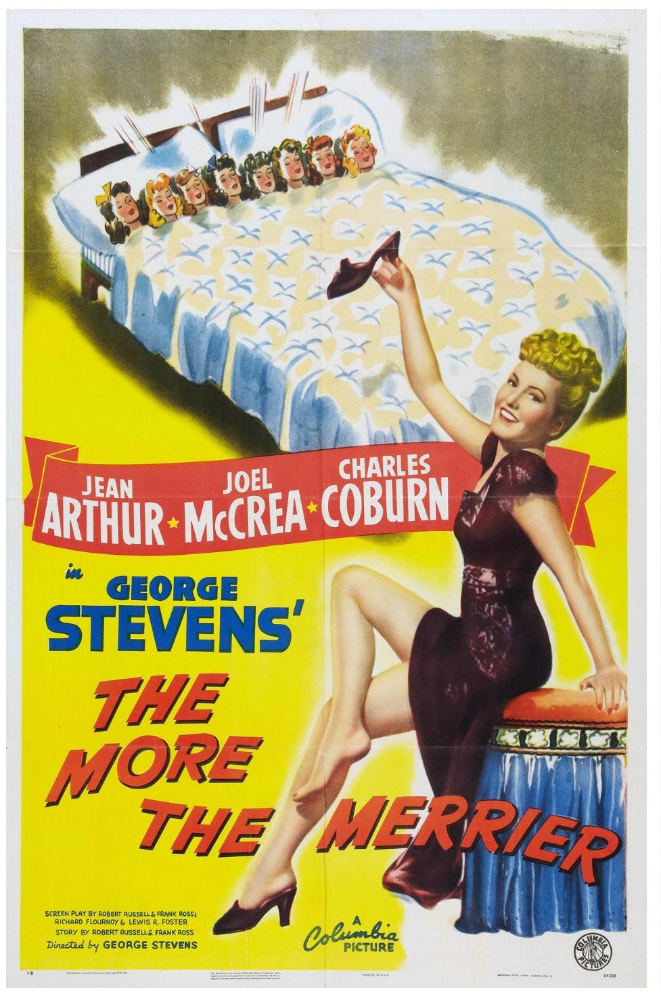

The More the Merrier
16th Academy Awards
(Oscars 1944)
6 Nominations, 1 Award
| Nominations | ||
|---|---|---|
| Category | Nominees | Result |
| Outstanding Motion Picture | Columbia | Nominated |
| Actress | Jean Arthur | Nominated |
| Actor in a Supporting Role | Charles Coburn | Won |
| Directing | George Stevens | Nominated |
| Writing (Original Motion Picture Story) | Frank Ross and Robert Russell | Nominated |
| Writing (Screenplay) | Frank Ross, Lewis R. Foster, Richard Flournoy, and Robert Russell | Nominated |